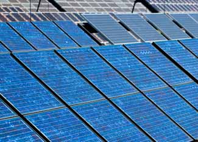

New manufacturing facilities for solar cells and modules in Massachusetts, Michigan, Ohio, Oregon and Texas promise to add enough capacity to produce thousands of megawatts of solar devices per year within the next few years. In late September, Sanyo Electric Company, Ltd. announced its decision to build a manufacturing plant for solar ingots and wafers (the building blocks for silicon solar cells) in Salem, Ore. The plant will begin operating in October 2009 and will reach its full production capacity of 70 megawatts (MW) of solar wafers per year by April 2010.
In early October, First Solar, Inc. broke ground on an expansion of its Perrysburg, Ohio, facility that will add enough capacity to produce another 57 MW per year of solar modules at the facility, bringing its total capacity to roughly 192 MW per year. The company expects to complete construction early next year and reach full production by mid-2010. And in mid-October, SolarWorld AG opened a manufacturing plant in Hillsboro, Ore., that is expected to produce 500 MW of solar cells per year when it reaches full production in 2011.
Production is also surging ahead for manufacturers of flexible thin-film solar modules. Energy Conversion Devices, Inc. (ECD) - a manufacturer of thin-film modules deposited on flexible stainless steel - has announced plans to build a facility in Battle Creek, Mich., that will produce 120 MW of solar modules per year. ECD will start construction this fall, with production starting by the end of 2009. ECD has the option of doubling its production capacity in Battle Creek and has plans to reach 1,000 MW of annual production by 2012. Konarka Technologies, Inc. deposits its solar modules onto a flexible plastic substrate, and the company has just reopened a former Polaroid Corporation facility in New Bedford, Mass., that has been converted into a production facility for Konarka's "Power Plastic" solar modules. Konarka expects the facility to reach its capacity to produce of 1,000 MW of solar modules per year by 2011. Both companies employ a roll-to-roll process, similar to a newspaper printing press, for the manufacture of their solar modules. The manufacturing process offers the possibility of achieving high production capacities at a lower cost than most solar cell manufacturing plants.
Last but not least, HelioVolt Corporation cut the ribbon last week on a manufacturing facility in Austin, Texas, that will have an initial capacity to produce 20 MW of solar cells per year. Starting with solar "inks" developed at DOE's National Renewable Energy Laboratory that are deposited with ink jets, HelioVolt employs a proprietary "printing" process to produce solar cells consisting of thin films of copper indium gallium selenide, or CIGS. The technology won an R&D 100 Award this year, and at last week's award ceremony, it earned an Editor's Choice Award for Most Revolutionary Technology. HelioVolt's "FASST" reactive transfer printing process is 10 to 100 times faster than other CIGS production processes and can also be combined with vacuum evaporation or ultrasonic spray deposition techniques. At its new Austin manufacturing plant, HelioVolt plans to produce both solar modules and next-generation building-integrated solar products using its FASST process.
|
 ISTOCKPHOTO Several companies are rapidly ramping up production of photovoltaic panels. |
|
|